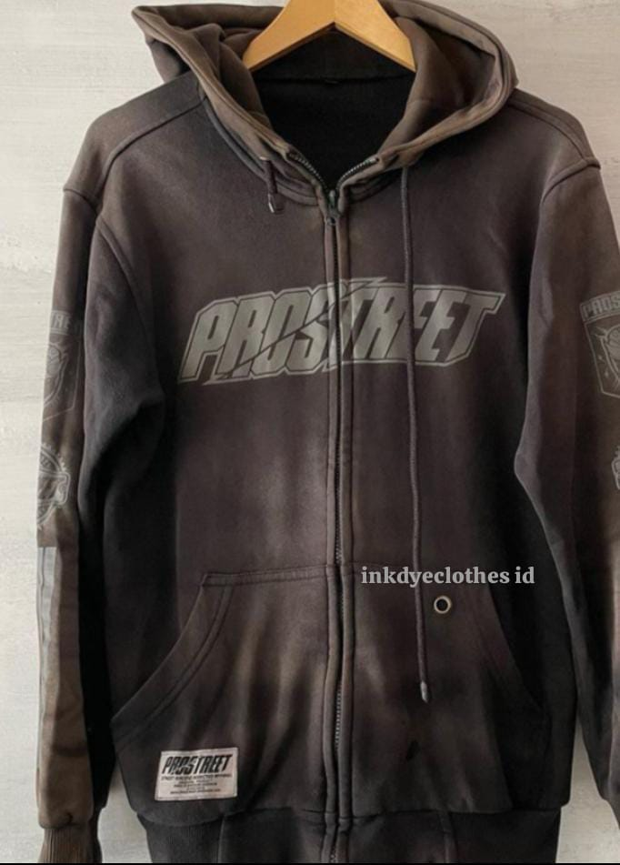
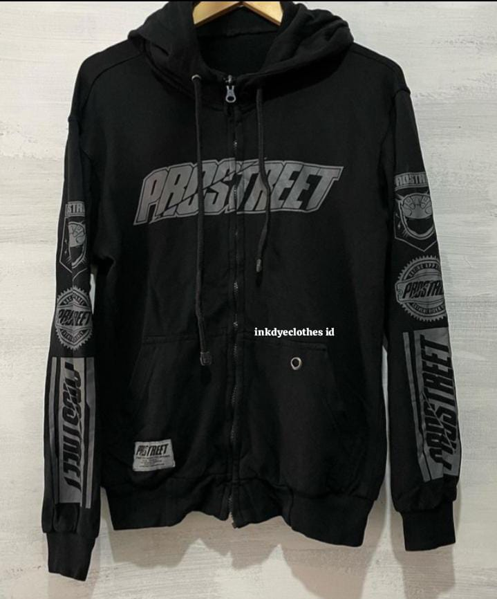

Restorasi hoodie
Mengembalikan warna pakaian yang telah memudar dengan mempertimbangkan kondisi bahan dan warna awal.
Mengembalikan warna pakaian yang telah memudar melalui proses dyeing yang disesuaikan dengan kondisi bahan.
Pengecekan kondisi pakaian dilakukan terlebih dahulu sebelum proses untuk melihat kelayakan bahan dan kemungkinan hasil.
Setiap pakaian memiliki kondisi bahan, warna awal, dan tingkat pemudaran yang berbeda. Karena itu, hasil tidak ditentukan hanya dari warna yang diinginkan, tetapi juga dari kondisi pakaian sebelum proses.
Dokumentasi pengerjaan menunjukkan perubahan warna pakaian sebelum dan sesudah proses dyeing.
Mengembalikan warna pakaian yang telah memudar dengan mempertimbangkan kondisi bahan dan warna awal.

Proses disesuaikan dengan karakter bahan dan kondisi pakaian sebelum dikerjakan.

Setiap pakaian diperiksa terlebih dahulu agar proses dapat dilakukan dengan pertimbangan yang sesuai.

Hasil akhir diperiksa kembali setelah proses selesai sebelum pakaian dikembalikan.
Ada pakaian yang masih layak dipakai, nyaman, memiliki nilai pribadi, atau memang sulit digantikan.
Warna hitam yang sebelumnya pekat terlihat kusam setelah pemakaian dan pencucian berulang.
Warna tidak lagi terlihat seperti kondisi awal meskipun pakaian sebenarnya masih layak digunakan.
Model dan bahan masih disukai, tetapi perubahan warna membuat pakaian terasa berbeda.
Mengganti pakaian tidak selalu menjadi pilihan terbaik ketika pakaian tersebut masih memiliki nilai bagi pemiliknya.
Tujuannya adalah mempertahankan pakaian yang masih layak dan mengembalikan tampilan warnanya sejauh kondisi bahan memungkinkan.
Kondisi bahan menentukan bagaimana pakaian dapat diproses dan seberapa jauh hasil dapat dicapai.
Karena itu, pengecekan dilakukan sebelum proses. Informasi mengenai bahan, warna awal, kondisi pakaian, dan tingkat pemudaran membantu menentukan kemungkinan hasil secara lebih realistis.
Jika kondisi pakaian tidak memungkinkan untuk diproses dengan aman atau hasilnya tidak sesuai harapan, hal tersebut akan disampaikan terlebih dahulu.
Melihat jenis dan kondisi bahan pakaian sebelum proses.
Melihat warna awal dan tingkat perubahan warna yang sudah terjadi.
Mempertimbangkan kondisi pakaian dan risiko yang mungkin muncul selama proses.
Menentukan ekspektasi hasil berdasarkan kondisi pakaian yang sebenarnya.
Pengerjaan dilakukan melalui beberapa tahap untuk menjaga hasil tetap sesuai dengan kondisi pakaian.
Kondisi pakaian, material, warna awal, tingkat pemudaran, dan kemungkinan proses diperiksa terlebih dahulu.
Pakaian dipersiapkan sesuai kondisi sebelum masuk ke tahap pencelupan.
Proses pencelupan dilakukan dengan teknik yang disesuaikan dengan bahan dan target warna.
Tahap fixation dilakukan untuk membantu menjaga keterikatan warna pada material sesuai karakter proses yang digunakan.
Pakaian melalui tahap pencucian dan penyelesaian setelah proses dyeing.
Kondisi akhir diperiksa sebelum pakaian dinyatakan selesai.
Kualitas proses, bahan yang digunakan, fixation, dan kontrol akhir ikut menentukan hasil pengerjaan.
Proses menggunakan bahan pewarna yang disesuaikan dengan kebutuhan pencelupan material tertentu.
Tahap fixation menjadi bagian penting dalam proses untuk membantu menjaga durabilitas warna.
Kondisi pakaian diperiksa kembali setelah pengerjaan sebelum proses dinyatakan selesai.
Pakaian memiliki nilai yang berbeda bagi setiap orang. Karena itu, informasi dan komunikasi sebelum proses menjadi bagian penting dari pengerjaan.
Feedback customer.
Mulai dari pengecekan awal, komunikasi mengenai kondisi pakaian, kemungkinan hasil, proses pengerjaan, hingga pemeriksaan akhir.
Jika pakaian tidak layak atau kondisi tertentu membuat hasil sulit dipastikan, informasi tersebut perlu disampaikan sebelum proses dilakukan.
Kirim informasi pakaian terlebih dahulu agar dapat kami cek sebelum proses.
Mulai dari informasi dan foto pakaian. Dari sana kondisi awal dapat dilihat dan dibicarakan sebelum pakaian dikirim untuk dikerjakan.
Sertakan foto pakaian dan informasi yang relevan mengenai kondisi serta warna yang diinginkan.
Informasi dapat dikirim melalui WhatsApp untuk dibahas lebih lanjut.
Kondisi pakaian diperiksa untuk melihat kelayakan proses dan kemungkinan hasil.
Setelah kondisi diketahui, estimasi pengerjaan dan biaya dapat dibicarakan.
Setelah proses disepakati, pakaian dapat dikirim untuk dikerjakan.
Tidak selalu. Kondisi bahan, komposisi material, warna awal, dan kondisi pakaian akan memengaruhi kelayakan proses serta kemungkinan hasil.
Setelah hasil pengecekan dan estimasi disepakati, pakaian dapat dikirim melalui ekspedisi atau Gojek.
Untuk penerimaan langsung, silakan hubungi WhatsApp terlebih dahulu agar waktu penerimaan dapat disesuaikan.
Normalnya sekitar 1–2 hari, tergantung kondisi pakaian dan jumlah pengerjaan.
Hasil warna dipengaruhi kondisi bahan, warna awal, komposisi material, dan proses sebelumnya. Karena itu, hasil akan dibicarakan berdasarkan kondisi pakaian yang sebenarnya.
Jika setelah pengecekan kondisi pakaian dinilai tidak memungkinkan atau risikonya terlalu tinggi, hal tersebut akan disampaikan sebelum proses.
Bisa diperiksa terlebih dahulu. Karena setiap material dan kondisi pakaian berbeda, kelayakan proses perlu dilihat sebelum pengerjaan.
Pakaian hitam yang memudar dapat diperiksa untuk melihat kemungkinan restorasi warna. Hasil akhir tetap bergantung pada kondisi material dan warna awal pakaian.
Kirim informasi dan foto pakaian melalui WhatsApp untuk pengecekan awal.